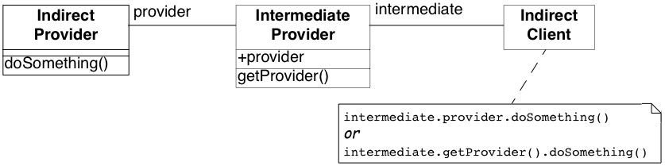
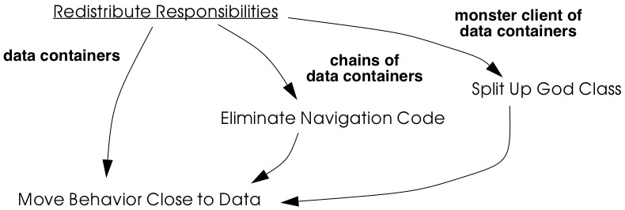
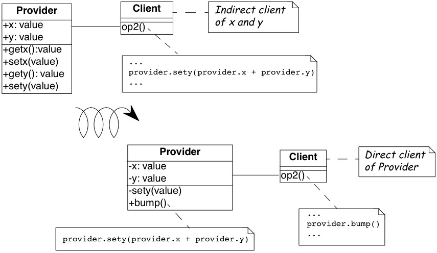
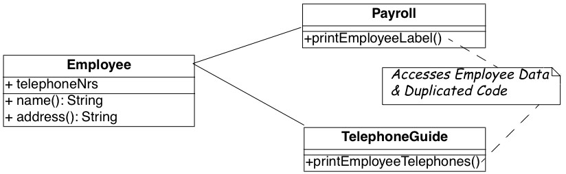
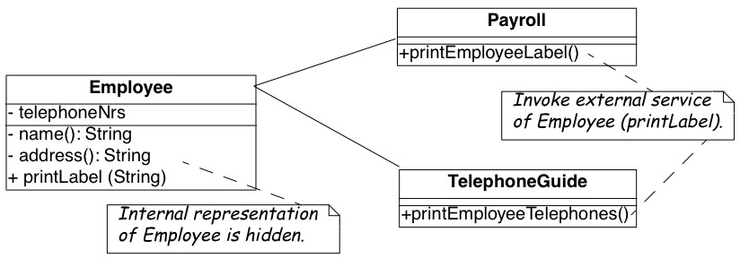
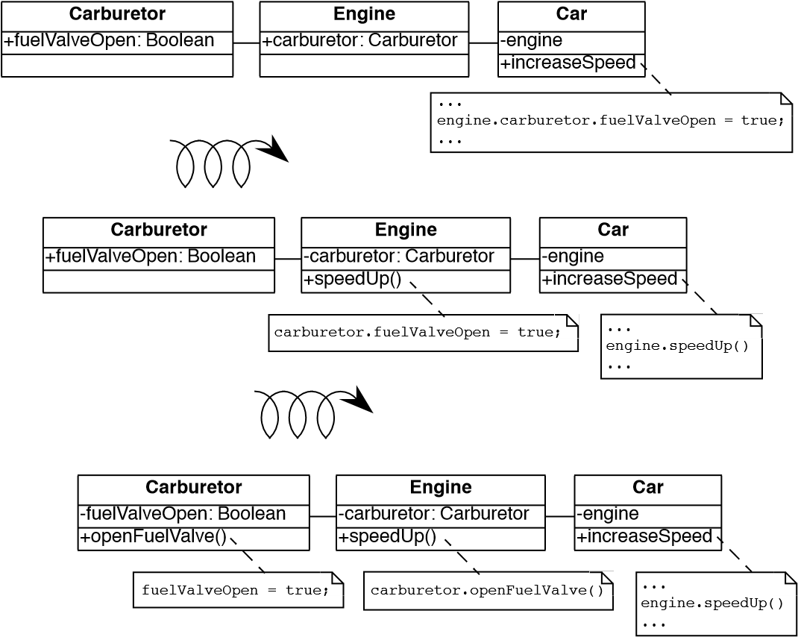

9. Redistribute Responsibilities
You are responsible for reengineering the information system that manages all employee records for a large public administration. Due to recent political upheavals, you know that there will be many changes required in the system to cope with privatization, new laws, and new regulations, but you do not know exactly what they will be. The existing system consists of a nominally object-oriented reimplementation of an older procedural system. The code contains many pseudo-objects: data containers masquerading as objects, and big, procedural “god classes” that implement most of a the logic of individual subsystems. One class, called TaxRevision2000, has a single method consisting essentially of a case statement that is 3000 lines long.
As long as the system was relatively stable, this design posed no particular problems, but now you see that even relatively modest changes to system require months of planning, testing and debugging due to weak encapsulation of data. You are convinced that migrating to a more objectoriented design will make the system more robust and easier to adapt to future requirements. But how do you know where the problems lie? Which responsibilities should be redistributed? Which data containers should you redesign, which ones should you wrap, and which ones are better left alone?
Forces
-
Data containers (objects that just provide access to data, but no own behavior) are a simple and convenient way to share information between many subsystems. Among others, data containers are the easiest way to provide access to database entities.
-
However, data containers expose the data representation, hence are difficult to change when many application components depend on them. _Consequently, a proliferation of data containers leads to fragile navigation code in the implementation of business logic.* It is hard to teach an old dog new tricks. Many designers received a training in functional decomposition and will use the same habits when doing an object design.
-
However, functional decomposition tends to generate god classes, i.e., big classes that do all of the work and have a myriad of tiny provider classes around of it. God classes are hard to extend, modify or subclass because such changes affect large numbers of other methods or instance variables.
Overview
This cluster deals with problems of misplaced responsibilities. The two extreme cases are data containers, classes that are nothing but glorified data structures and have almost no identifiable responsibilities, and god classes, procedural monsters that assume too many responsibilities.
Although there are sometimes borderlines cases where data containers and god classes may be tolerated, particularly if they are buried in a stable part of the system which will not change, generally they are a sign of a fragile design.
Data containers lead to violations of the Law of Demeter (LOD) [LHR88]. In a nutshell, the Law of Demeter provides a number of design guidelines to reduce coupling between distantly-related classes. Although the Law of Demeter has various forms, depending on whether one focusses on objects or classes, and depending on which programming language is being used, the law essentially states that methods should only send messages to instance variables, method arguments, self, super, and the receiver class.
Violations of the Law of Demeter typically take the form of navigation code in which an indirect client accesses an indirect provider by accessing either an instance variable or an acquaintance of an intermediate provider. The indirect client and provider are thereby unnecessarily coupled, making future enhancements more difficult to realize (Figure 9.2). The intermediate provider may take the form of a data container or opens its encapsulation by providing accessor methods. Designs with many data containers present often suffer from complex navigation code in which indirect clients may have to navigate through a chain of intermediates to reach the indirect provider.

Figure 9.1: An indirect client violates the Law of Demeter by navigating through an intermediate provider to an indirect provider, unnecessarily coupling the two.
Whereas data containers have too few responsibilities, god classes assume too many. A god class can be a single class that implements an entire subsystem, consisting of thousands of lines of code and hundreds of methods and instance variables. Particularly vicious god classes consist of only static instance variables and methods, i.e., all data and behavior have class scope, and the god class is never instantiated. Such god classes are purely procedural beasts, and are object-oriented in name only.
Occasionally some procedural classes known as utility classes are convenient. The best known examples are object-oriented interfaces to math libraries, or collections of algorithms. Real god classes, however, are not libraries, but complete applications or subsystems that controls the entire application execution.
God classes and data containers often occur together, with the god class assuming all the control of the application, and treating other classes as glorified data structures. Since they assume too many responsibilities, god classes are hard to understand and maintain. Incremental modification and extension of a god class through inheritance is next to impossible due to the complexity of its interface and the absence of clear subclassing contract.
This cluster provides a number of patterns to eliminate data containers and god classes by redistributing responsibilities and thereby improving encapsulation.
-
Move Behavior Close to Data [p. 221] moves behavior defined in

Figure 9.2: Data containers are the clearest sign of misplaced responsibilities. These three patterns redistribute responsibilities by moving behavior close to data.
indirect clients to an intermediate data container to make it more “object-like”. This pattern not only decouples indirect clients from the contents of the data container, but also typically eliminates duplicated code occurring in multiple clients of the data container.
-
Eliminate Navigation Code [p. 230] is technically very similar to Move Behavior Close to Data in terms of the reengineering steps, but is rather different in its intent. This pattern focusses on redistributing responsibilities down chains of data containers to eliminate navigation code.
-
Split Up God Class [p. 239] refactors a procedural god class into a number of simple, more cohesive classes by moving all data to external data containers, applying Move Behavior Close to Data to promote the data containers to objects, and finally removing or deprecating the facade that remains.
9.1 Move Behavior Close to Data
Intent _Strengthen encapsulation by moving behavior from indirect clients to the class containing the data it operates on.
Problem
How do you transform a class from being a mere data container into a real service provider?
This problem is difficult because: * Data containers offer only accessor methods or public instance variables, and not real behavior, forcing clients to define the behavior themselves instead of just using it. New clients typically have to reimplement this behavior. * If the internal representation of a data container changes, many clients have to be updated. * Data containers cannot be used polymorphically since they define no behavior and their interfaces consist mainly of accessor methods. As a consequence, clients will be responsible for deciding which behavior is called for in any given context.
Yet, solving this problem is feasible because: * You know what operations clients perform with the data.
Solution
Move behavior defined by indirect clients to the container of the data on which it operates.
Detection Look for:
-
Data containers, i.e., classes defining mostly public accessor methods and few behavior methods (i.e., the number of methods is approximately 2 times larger than the number of attributes.

Figure 9.3: Classes that were mere data containers are transformed into real service providers.
-
Duplicated client code that manipulates data of separate provider classes. If multiple clients implement different behavior, consider instead applying Transform Client Type Checks [p. 257].
-
Methods in client classes that invoke a sequence of accessor methods (see Eliminate Navigation Code).
Steps
Move Behavior Close to Data makes use of the refactorings Extract Method [p. 291] and Move Method [p. 291], since the behavior in question will have to be extracted from a client method and then moved to a provider class.
-
Identify the client behavior that you want to move, i.e., the complete method or a part of a method that accesses provider data.
-
Look for the invocations of the accessor methods of the data container.
-
Look for duplicated code in multiple clients that access the same provider data.
-
-
Create the corresponding method in the provider class, if it does not already exist. Be sure to check that moving the code will not introduce any naming conflicts. Tools like the Refactoring Browser [RBJ97] automate these steps:
-
If the extracted functionality is a complete method with arguments, check that the arguments do not conflict with attributes of the provider class. If so, rename the arguments.
-
If the extracted functionality uses temporary variables, check that the local variables do not conflict with attributes or variables in the target scope. If so, rename the temporary variables.
-
Check if the extracted functionality accesses local variables of the client classes (attributes, temporary variables,…), if so, add arguments to the method to represent these client variables.
-
-
Give an intention-revealing name to the new method. Among others, intention revealing names do not contain references to the class they belong to, because this makes the method less reusable. For instance, instead of defining a method addToSet() on a class Set, it is better to name it simply add(). Similarly, it is not such a good idea to define a method binarySearch() on a class Array, because the method name implies a sorted random access collection, while the name search() does not have such implications.
-
In the client invoke the new provider method with the correct parameters.
-
Clean up the client code. In the case the moved functionality was a complete method of the client class:
-
check all the methods that invoke the old, moved method and ensure that they now call the new provider method instead, and
-
remove the old method from the client or deprecate it. (Deprecate Obsolete Interfaces [p. 193]).
-
It may be the case that the calling methods defined on the same object have to be also moved to the provider. In such a case repeat the steps for the methods. 1. Repeat for multiple clients. Note that duplicated code in multiple clients will be removed in step 2, since there is no need to move code that has already been transferred to the provider. In case many similar, but not identical methods are introduced to the provider, consider factoring out the duplicated fragments as protected helper methods.
Tradeoffs
Pros
-
Data containers are converted to service providers with clear responsibilities.
-
The service providers become more useful to other clients.
-
Clients are no longer responsible for implementing provider behavior.
-
Clients are less sensitive to internal changes of the provider.
-
Code duplication in the system decreases.
Cons
-
If the moved behavior also accesses client data, turning these accesses into parameters will make the interface of the provider more complex and introduce explicit dependencies from the provider to the client.
Difficulties
-
It may not be clear whether client code really should be moved to the data provider. Some classes like Stream or Set are really designed as data providers. Consider moving the code to the provider if:
– the functionality represents a responsibility of the provider. For example, a class Set should provide mathematical operations like union and intersection. On the other hand, a generic Set should not be responsible for operations on sets of Employees. – the functionality accesses the attributes of the provider, – the functionality is defined by multiple clients.
-
If the provider is really designed as a data container, consider defining a new provider class that wraps an instance of the data provider and holds the associated behavior. For example, an EmployeeSet might wrap a Set instance and provide a more suitable interface.
When the legacy solution is the solution
Data containers may have been automatically generated from a database schema to provide an object interface to an existing database. It is almost always a bad idea to modify generated classes, since you will lose your changes if the code ever needs to be regenerated. In this case, you may decide to implement wrapper classes to hold the behavior that should be associated with the generated classes. Such a wrapper would function as an Adapter [p. 293] that converts the generated data container to a real service provider.
Sometimes you know that a class defined in a library is missing crucial functionality. For example, an operation convertToCapitals that is missing for class String. In such a case it is typically impossible to add code to the library, so you may have to define it in client class. In C++ for example, it may be the only way to avoid recompilation or to extend a class when the code is not available [ABW98] (p. 378). In Smalltalk you have the possibility to extend or modify the library, however you should pay particular attention to separate the additional code so you can easily merge it with future releases of the library, and quickly detect any conflicts.
The intent of the Visitor [p. 296] design pattern states: “Represent an operation to be performed on the elements of an object structure in a class separate from the elements themselves. Visitor lets you define a new operation without changing the classes of the elements on which it operates” [GHJV95]. The Visitor pattern is one of the few cases where you want to have classes access the data of a separate provider class. Visitor allows one to dynamically add new operations to a set of stable classes without having to change them.
Configuration classes are classes that represent the configuration of a system (e.g., global parameters, language dependent representation, policies in place). For example, in a graphic tool the default size of the boxes, edges, width of the lines can be stored in a such class and other classes refer to it when needed.
Mapping classes are classes used to represent mappings between objects and their user interface or database representation. For example, a software metric tool should graphically represent the available metrics in a widget-list so that the user can select the metrics to be computed. In such a case the graphical representation of the different metrics will certainly differ from their internal representation. A mapping class keeps track of the association.
Example
One of the recurring complaints of the customers is that it takes too much time to change the reports generated by the information system. By talking to the maintainers you learn that they find generating the reports quite boring. “Its’s always the same code you have to write,” says Chris, one

Figure 9.4: The Payroll and Telephone classes access the internal representation of the class Employee to print a representation.
of the maintainers. “You fetch a record out of the database, print its fields and then proceed to the next record.”
You strongly suspect a case of data-containers and a closer examination of the code confirms your suspicion. Almost all of the classes interfacing with the database contain accessor methods only, and the programs generating reports are forced to use these accessors. One striking example is the case of the Payroll application, which has lots in common with the TelephoneGuide application and you decide to try to move the common functionality to the Employee class.
Before
As shown in Figure 9.4, both the Payroll and TelephoneGuide classes print labels, treating Employee instances as data containers. Thus, Payroll and TelephoneGuide are indirect clients of the attributes of Employee, and define printing code that should have been provided by the Employee class.
The following code show how this would look like in Java.
| a| public class Employee \{ public String[] telephoneNumbers = \{};
…
public String name() \{ return name;}
public String address() \{ return address;}
}
public class Payroll \{
a| public static Employee currentEmployee;
public static void printEmployeeLabel () \{
System.out.println(currentEmployee.name()); System.out.println(currentEmployee.address());
for (int i=0; i < currentEmployee.telephoneNumbers.length; i++) \{ System.out.print(currentEmployee.telephoneNumbers[i]); System.out.print(" ");}
System.out.println("");}
…
}
public class TelephoneGuide \{
public static void printEmployeeTelephones (Employee emp) \{
System.out.println(emp.name()); System.out.println(emp.address());
for (int i=0; i < emp.telephoneNumbers.length — 1; i++) \{
System.out.print(emp.telephoneNumbers[i]); System.out.print(" ---- ");}
System.out.print(emp.telephoneNumbers[ emp.telephoneNumbers.length — 1]); System.out.println("");}
-
}
|
Note that although both print methods implement essentially the same functionality, there are some slight differences. Among others, TelephoneGuide.printEmployeeTelephones uses a different separator while printing out the telephone numbers.
Steps
The different separators can easily be dealt with by defining a special parameter representing the separator to be used. Thus TelephoneGuide.printEmployeeTelephones gets rewritten as follows.
| a| public static void printEmployeeTelephones (Employee emp, String separator) \{
-
for (int i=0; …
System.out.print(separator);}
…} …
|
Next, move the printEmployeeTelephones method from TelephoneGuide to Employee. Thus, copy the code and replace all references to the emp parameter with a direct reference to the attributes and methods. Also, ensure that the new method has an intention revealing name, thus omit the Employee part from the method name, resulting in a method printLabel.
| a| public class Employee \{
…
public void printLabel (String separator) \{
System.out.println(name);
System.out.println(address);
for (int i=0; i < telephoneNumbers.length — 1; i++) \{
System.out.print(telephoneNumbers[i]);
System.out.print(separator);
}
System.out.print(telephoneNumbers[telephoneNumbers.length — 1]); System.out.println("");
} |
Then replace the method bodies of Payroll.printEmployeeLabel and TelephoneGuide.printEmployeeTelephones with a simple invocation of the Employee.printLabel method.
| a| public class Payroll \{
…
public static void printEmployeeLabel () \{ currentEmployee.printLabel(" ");
…}
public class TelephoneGuide \{
…
public static void printEmployeeTelephones (Employee emp) \{ emp.printLabel(" ---- ");}
…} |
Finally, verify which other methods refer to the name(), address() and telephoneNumbers. If no such methods exist, consider to declare those methods and attributes as private.
After
After applying Move Behavior Close to Data the class Employee now provides a printLabel method which takes one argument to represent the different separators (see Figure 9.5). This is a better situation because now

Figure 9.5: The Payroll class uses the public interface of the class Employee to print a representation of Employee; data accessors became private.
clients do not rely on the internal representation of Employee. Moreover, by moving the behavior near the data it operates, the class represents a conceptual entity with an emphasis on the services it provides instead of structure it implements.
Rationale
_Keep related data and behavior in one place. — Arthur Riel, Heuristic 2.9 [Rie96]
Data containers impede evolution because they expose structure and force clients to define their behavior rather than sharing it. By promoting data containers to service providers, you reduce coupling between classes and improve cohesion of data and behavior.
9.2 Eliminate Navigation Code
Also Known As: Law of Demeter [LHR88]
Intent _Reduce the impact of changes by shifting responsibility down a chain of connected classes.
Problem
How do you reduce coupling due to classes that navigate through the object graph?
This problem is difficult because: * Changes in the interfaces of a class will affect not only direct clients, but also all the indirect clients that navigate to reach it.
Yet, solving this problem is feasible because: * Navigation code is typically a sign of misplaced responsibilities and violation of encapsulation.
Solution
Iteratively move behavior defined by an indirect client to the container of the data on which it operates.
Note that actual reengineering steps are basically the same as those of Move Behavior Close to Data, but the manifestation of the problem is rather different, so different detection steps apply.
Detection
Look for indirect providers:
-
Each time a class changes, e.g., by modifying its internal representation or collaborators, not only its direct but also indirect client classes have to be changed.
-
Look for classes that contain a lot public attributes, accessor methods or methods returning as value attributes of the class.
-
Big aggregation hierarchies containing mostly data classes often play the role of indirect provider.
Look for indirect clients that contain a lot of navigation code. Navigation code is of two kinds:
-
a sequence of attribute accesses, e.g.,a.b.c.d where b is an attribute of a, c is an attribute of b and d an attribute of c. The result of such a sequence can be assigned to variable or a method of the last object can be invoked, e.g.,a.b.c.d.op(). Such a sequence navigation does not occur in Smalltalk where all the attributes are protected.
-
a sequence of accessor method calls. In Java and C++ such a sequence has the form object.m1().m2().m3() where object is an expression returning an object, m1 is a method of object, m2 a method of the object returned by the invocation of m1, m3 a method of the object returned by the invocation of m2 and so on. In Smalltalk navigation code has the following form receiver m1 m2 … mn The same navigation code sequence is repeated in different methods on the same or different clients.
Navigation code can be detected by simple pattern matching. However, to really detect a method call navigation sequence leading to coupled classes, you should filter out sequences of calls converting one object to another one. For example, the following two Java expressions are not problematic because they deal with object conversion.
leftSide().toString()
i.getValue().isShort()
To deal with this case you can: * look for more than two calls, or * eliminate from consideration known object conversion calls, including standard method invocations for converting to and from primitive types.
The use of additional variables, can sometimes disguise navigation code, so reading the code is often necessary. For instance, the following Java code does not contain a chain of invocations.
| a| Token token; token = parseTree.token(); if (token.identifier() != null) \{
…
|
However, it is equivalent to the following code, which does contain a chain of invocations
| a| if (parseTree.token().identifier() != null) \{
…
|
Smalltalk. Simply searching for sequences of calls in Smalltalk code can create a lot of noise because Smalltalk does not have predefined control structures but uses messages even for implementing control structures. The above example with the disguised navigation code would read as follows in Smalltalk. (Note the messages isNil and ifFalse:[…])
| a| | token | token := parseTree token.
token identifier isNil ifFalse:[…]
|
The equivalent version with navigation code becomes.
parseTree token identifier isNil ifFalse: […]
The following code segments contain a sequence of invocations but do not pose any problems because the first deals with boolean testing and the second with conversion (abuse of conversion, in fact).
(a isNode) & (a isAbstract) ifTrue: […] aCol asSet asSortedCollection asOrderedCollection
Java. For Java or C++, primitives data types and control structures are not implemented using objects, so simple pattern matching produces less noise. For example, a simple Unix command like:
egrep '.\(\).\(\).\(\).' *.java egrep '.\..\..\..' *.java
identifies lines of code like the following ones, which are examples of navigation code coupling between classes, and filters out the conversions mentioned above.
a.getAbstraction().getIdentifier().traverse(this)
a.abstraction.identifier.traverse(this)
More sophisticated matching expressions can reduce the noise produced by the parentheses of casts or other combinations.
AST Matching. If you have a way to express tree matching, you can detect navigation code. For example, the Rewrite Rule Editor that comes with the Refactoring Browser [RBJ97] can detect navigation code using the pattern
_ Figure 9.6: Chains of data containers can be converted into service providers, thereby eliminating navigation code and reducing coupling between classes.
’@object ’mess1 ’mess2 ’mess3. To narrow the analysis of the results you should only consider messages that belong to the domain objects and eliminate all the method selectors of libraries objects like (isNil, not, class,
…).
Steps
The recipe for eliminating navigation code is to recursively Move Behavior Close to Data. Figure 9.6 illustrates the transformation.
-
Identify the navigation code to move.
-
Apply Move Behavior Close to Data to remove one level of navigation. (At this point your regression tests should run.)
-
Repeat, if necessary.
Caution. It is important to note that the refactoring process relies on pushing code from the clients to the providers. In the example, from Car to Engine and from Engine to Carburetor. A common mistake is to try to eliminate navigation code by defining accessors at the client class level that access the attributes of the provider attribute values, e.g., defining an accessor getCarburetor in the class Car. Instead of reducing coupling between the classes, it just increases the number of public accessors and makes the system more complex.
Tradeoffs
Pros
-
Chains of dependencies between classes are eliminated, so changes in classes at the lowest level will impact fewer clients.
-
Functionality that was implicit in the system is now named and explicitly available to new clients.
Cons
-
The systematic application of Eliminate Navigation Code may lead to large interfaces. In particular, if a class defines many instance variables that are collections, then Eliminate Navigation Code would force you to define a large number of additional methods to shield the underlying collections.
Difficulties
-
Deciding when to apply Eliminate Navigation Code can be difficult. Defining methods that merely delegate requests to class collaborators may not always be the solution. It may happen that giving away internal information can reduce the interface of a class. For example, if a class implements some well-defined behaviors but also serves as a Facade [p. 293] to other collaborators, it may be simpler to give access to the collaborator directly to reduce the interface of the class. ===== When the legacy solution is the solution
Navigation code may be the best solution when objects are graphically presented or mapped to a database. In such cases the goal is to really expose and mimic the structural relationships between classes. Eliminating navigation code will be a futile exercise.
Figure 9.7: How to remove the unnecessary dependencies between the Reports class and the File and Employee Classes.
It is sometimes necessary for a client to talk with its indirect providers. This is true when direct providers play the role of an object server that returns certain objects given certain properties (OOID, keys…). In this situation the client calls the object server (a direct provider) that returns objects (indirect providers) to which the client sends messages.
Example
After having modified the Employee, Payroll and TelephoneGuide classes, you noticed that it took 1/2 an hour to rebuild the whole project. Next time you see Chris (one of the maintainers) you ask him why this build took so long. “You probably changed the Employee class” he answers, “we don’t dare to touch that class anymore since so many classes depend on it”.
You decide to examine this Employee class in further detail and find many unnecessary dependencies. For instance (as shown in Figure 9.7) there is a class Reports, implementing one method countHandledFiles, which counts for each Department the number of files that are handled by all of its employees. Unfortunately, there is no direct relationship between Department and File and consequently the ReportHandledFiles must navigate over a department’s employees to enumerate all the files and access the handled() status.
The Java code below shows the situation before and after applying Eliminate Navigation Code. The bold textual elements highlight problems and the solutions in the before and after situation.
Before
| a| public class Reports \{
…
public static void countHandledFiles(Department department) \{ int nrHandled = 0, nrUnhandled = 0;
for (int i=0; i < department.employees.length; i) \{ for (int j=0; j < department.employees[i].files.length; j) \{ if (department.employees[i].files[j].handled()) \{ nrHandled++;}
else \{ nrUnhandled++;}}}
…}
|
The method countHandledFiles counts the number of handled files, by asking the current department its employees and for each of these files. The classes Department and Employee have to declare those attributes public. With this implementation, two problems occur:
-
The Reports class must know how to enumerate the associations between Department, Employee and File, and this information must be accessible in the public interface of each of the classes. If one of these public interfaces change, then this change will affect all associated classes.
-
The method countHandledFiles is implemented by directly accessing the variables employees and files. This unnecessarily couples the class Reports and the classes Department and Employee. If the class Department or Employee change the data-structure used to gold the associated objects, then all the methods in class Reports will have to be adapted.
Steps
The solution is to extract the nested for loops as separate methods and move them on the appropriate classes. This is actually a two step process.
First extract the outer for loop from Reports.countHandledFiles as a separate method (name it countHandledFiles as well) and move it to the class Department.
| a| public class Department \{
…
public void countHandledFiles
(Counter nrHandled, Counter nrUnhandled) \{ for (int i=0; i < this.employees.length; i) \{ for (int j=0; j < this.employees[i].files.length; j) \{ if (this.employees[i].files[j].handled()) \{ nrHandled.increment();}
else \{ nrUnhandled.increment();}}}} …}
public class Reports \{
…
_private static void countHandledFiles(Department department) \{
Counter nrHandled = new Counter (0), nrUnhandled = new Counter
(0);
department.countHandledFiles(nrHandled, nrUnhandled); …}
|
Next, extract the inner for loop from Department.countHandledFiles (also named countHandledFiles) and move it to the class Employee.
| a| public class Employee \{
…
public void countHandledFiles
(Counter nrHandled, Counter nrUnhandled) \{ for (int j=0; j < this.files.length; j++) \{ if (this.files[j].handled()) \{ nrHandled.increment();}
else \{ nrUnhandled.increment();}}}
…}
public class Department \{
…
public void countHandledFiles
(Counter nrHandled, Counter nrUnhandled) \{ for (int i=0; i < this.employees.length; i++) \{ a| this.employees[i].countHandledFiles(nrHandled, nrUnhandled);}}
…}
|
If all direct accesses to the employees and files variables are removed, these attributes can be declared private.
Rationale
A method “M” of an object “O” should invoke only the methods of the following kinds of objects.1. _itself2. _its parameters3. _any object it creates/instantiates4. _its direct component objects — Law of Demeter
Navigation code is a well-known symptom of misplaced behavior [LK94] [Sha97] [Rie96] that violates the Law of Demeter [LHR88]. It leads to unnecessary dependencies between classes and as a consequence changing the representation of a class requires all clients to be adapted.
Related Patterns
Eliminate Navigation Code and Compare Code Mechanically [p. 204] reinforce each other: Navigation code that is spread across different clients spreads duplicated code over the system. Compare Code Mechanically helps to detect this phenomenon. Eliminate Navigation Code brings the duplicated code together, where it is easier to refactor and eliminate.
9.3 Split Up God Class
Also Known As: The Blob [BMMM98], God Class [Rie96]
Intent _Split up a class with too many responsibilities into a number of smaller, cohesive classes.
Problem
How do you maintain a class that assumes too many responsibilities?
This problem is difficult because: * By assuming too many responsibilities, a god class monopolizes control of an application. Evolution of the application is difficult because nearly every change touches this class, and affects multiple responsibilities. * It is difficult to understand the different abstractions that are intermixed in a god class. Most of the data of the multiple abstractions are accessed from different places. * Identifying where to change a feature without impacting the other functionality or other objects in the system is difficult. Moreover, changes in other objects are likely to impact the god class, thus hampering the evolution of the system. * It is nearly impossible to change a part of the behavior of a god class in a black-box way.
Yet, solving this problem is feasible because: * You don’t have to fix the problem in one shot. * You can use Semantic Wrapper to wrap it and present interfaces.
Solution
Incrementally redistribute the responsibilities of the god class either to its collaborating classes or to new classes that are pulled out the god class. When there is nothing left of the god class but a facade, remove or deprecate the facade.
Detection
A god class may be recognized in various ways:
-
a single huge class treats many other classes as data structures.
-
a “root” class or other huge class has a name containing words like “System”, “Subsystem”, “Manager”, “Driver”, or “Controller”.
-
changes to the system always result in changes to the same class.
-
changes to the class are extremely difficult because you cannot identify which parts of the class they affect.
-
reusing the class is nearly impossible because it covers too many design concerns.
-
the class is a domain class holding the majority of attributes and methods of a system or subsystem. (Note that the threshold is not absolute because some UI frameworks produce big classes with lots of methods, and some database interface classes may need a lot of attributes).
-
the class has an unrelated set of methods working on separated instance variables. The cohesiveness of the class is usually low.
-
the class requires long compile times, even for small modifications.
-
the class is difficult to test due to the many responsibilities it assumes.
-
the class uses a lot of memory.
-
people tell you: “This is the heart of the system”.
-
when you ask for the responsibility of a god class you get various, long and unclear answers.
-
god classes are the nightmare of maintainers, so ask what classes are huge and difficult to maintain. Ask what is the class they would not like to work on. (Variant: Ask people to choose which class they want to work on. The one that everybody avoids may be a god class.)
Steps
The solution relies on incrementally moving behavior away from the god class. During this process, data containers will become more object-like by acquiring the functionality that the god class was performing on their data. Some new classes will also be extracted from the god class.
_ Figure 9.8: A god class is refactored in two stages, first by redistributing responsibilities to data containers, or by spawning off new classes, until there is nothing left but a facade, and second by removing the facade.
The following steps describe how this process ideally works. Note, however, that god classes can vary greatly in terms of their internal structure, so different techniques may be used to implement the transformation steps. Furthermore, it should be clear that a god class cannot be cured in one shot, so a safe way to proceed is to first transform a god class into a lightweight god class, then into a Facade [p. 293] that delegates behavior to its acquaintances. Finally, clients are redirected to the refactored data containers and the other new objects, and the Facade can be removed. The process is illustrated in figure 39.
The following steps are applied iteratively. Be sure to apply Regression Test After Every Change [p. 182]:
-
Identify cohesive subsets of instance variables of the god class, and convert them to external data containers. Change the initialization methods of the god class to refer to instances of the new data containers.
-
Identify all classes used as data containers by the god class (including those created in step 1) and apply Move Behavior Close to Data to promote the data containers into service providers. The original methods of the god class will simply delegate behavior to the moved methods.
-
After iteratively applying steps 1 and 2, there will be nothing left of the god class except a facade with a big initialization method. Shift the responsibility for initialization to a separate class, so only a pure facade is left. Iteratively redirect clients to the objects for which the former god class is now a facade, and either deprecate the facade (see Deprecate Obsolete Interfaces [p. 193]), or simply remove it.
Tradeoffs
Pros
-
Application control is no longer centralized in a single monolithic entity but distributed amongst entities that each assume a welldefined set of responsibilities. The design evolves from a procedural design towards an object-oriented design based on autonomous interacting objects.
-
Parts of the original god class are easier to understand and to maintain.
-
Parts of the original god class are more stable because they deal with less issues.
-
Overall compilation time may be reduced due to the simplification of system dependencies.
Cons
-
Splitting up a god class is a long, slow and tedious process.
-
Maintainers will no longer be able to go to a single god class to locate behavior to fix.
-
The number of classes will increase.
Difficulties
-
God class methods may themselves be large, procedural abstractions with too many responsibilities. Such methods may need to be decomposed before cohesive sets of instance variables and methods can be teased out as classes. ===== When the legacy solution is the solution
What is riskier? To Split Up God Class or to leave it alone? A real god class is a large, unwieldy beast. Splitting it up into more robust abstractions may introduce considerable cost.
The key issue is whether the god class needs to be maintained. If the god class consists of stable, legacy code that rarely needs to be extended or modified, then refactoring it is a questionable investment of effort.
Suppose, on the other hand, that it is the clients of the god class that are unstable, and need to be frequently adapted to changing requirements. Then the clients should be shielded from the god class since it is not presenting a clean interface. Consider instead applying Present the Right Interface [p. 187], which will introduce a layer of clean, object-oriented abstractions between the clients and the god class, and may make it easier to evolve the clients.
Rationale
_Do not create god classes/objects in your system. — Arthur Riel, Heuristic 3.2 [Rie96]
God classes impede evolution because they achieve only a low level of procedural abstraction, so changes may affect many parts of the god class, its data containers and its clients. By splitting a god class up into objectoriented abstractions, changes will tend to be more localized, therefore easier to implement.
Related Patterns
Foote and Yoder in “Big Ball of Mud” [FY00] note that god classes (and worse) arise naturally in software development.
“People build BIG BALLS OF MUD because they work. In many domains, they are the only things that have been shown to work. Indeed, they work where loftier approaches have yet to demonstrate that they can compete. _It is not our purpose to condemn BIG BALLS OF MUD. Casual architecture is natural during the early stages of a system’s evolution. The reader must surely suspect, however, that our hope is that we can aspire to do better. By recognizing the forces and pressures that lead to architectural malaise, and how and when they might be confronted, we hope to set the stage for the emergence of truly durable artifacts that can put architects in dominant positions for years to come. The key is to ensure that the system, its programmers, and, indeed the entire organization, learn about the domain, and the architectural opportunities looming within it, as the system grows and matures.”— Foote & Yoder [FY00]
Present the Right Interface [p. 187] is a competing pattern that should be applied when the god class itself rarely needs to be modified or extended.